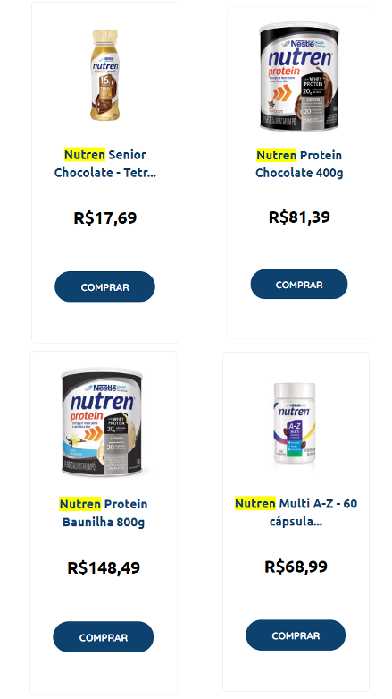

Dieta Saudável
Refeição 1 - Café da manhã:
- 1 porção de aveia com frutas frescas (como banana, morangos ou mirtilos)
- 1 omelete de claras de ovo com legumes (como espinafre, tomate e cogumelos)
- 1 xícara de chá verde ou café sem açúcar
Refeição 2 - Lanche da manhã:
- 1 porção de iogurte natural com uma colher de sopa de granola ou nozes
Refeição 3 - Almoço:
- 1 porção de peito de frango grelhado ou peixe (como salmão ou tilápia)
- 1 porção de arroz integral ou quinoa
- Salada verde com vegetais variados (alface, rúcula, tomate, cenoura)
- 1 colher de sopa de azeite de oliva como tempero
Refeição 4 - Lanche da tarde:
- 1 porção de frutas frescas (como maçã, laranja ou uvas)
- 1 punhado de castanhas ou amêndoas
Refeição 5 - Jantar:
- 1 porção de salmão grelhado ou tofu para opção vegetariana
- 1 porção de legumes cozidos no vapor (brócolis, couve-flor, abobrinha)
- 1 porção de batata-doce assada ou batata cozida
Refeição 6 - Ceia:
- 1 xícara de chá de camomila ou hortelã
